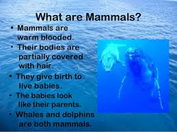
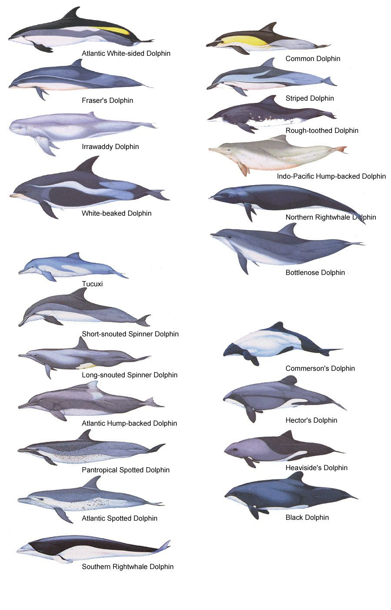
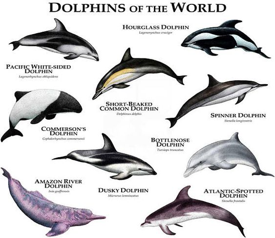
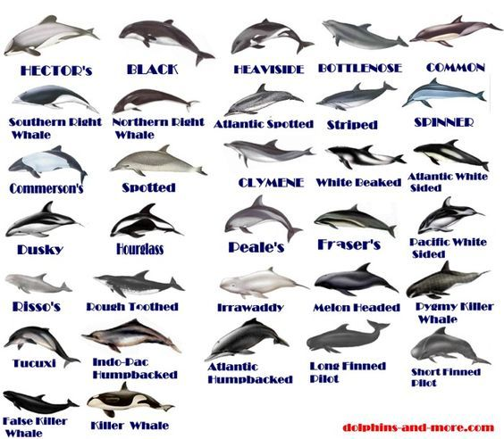
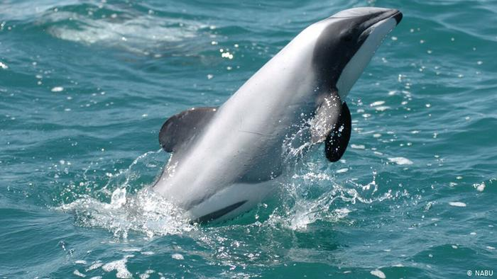

Many people assume dolphins are fish when they are if fact mammals. Dolphins have warm blood and nurse their young which depending on the breed will stay with them for up to six years.The Orca commonly called the killer whales is in fact not a whale.The orca is the largest of all dolphin species.

There are 49 dolphin and porpoise species that are grouped into six families. These are the dolphin family, the porpoise family, and the river dolphin family. The lifespan for the smaller species is about 20 years while the larger species can live 80 or more years.
  
The Maui dolphin in New Zeland is critically endangered. As of last year there is said to be only 55 left.
